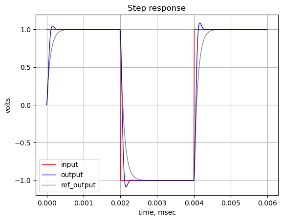
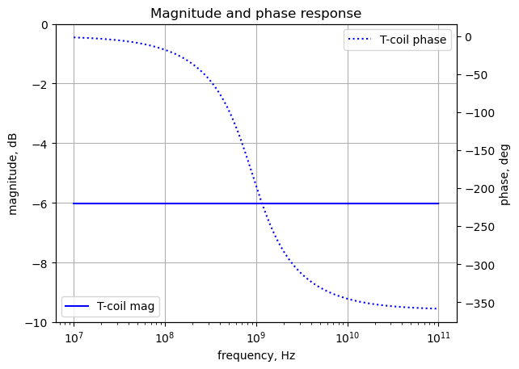

CS_ref_amp_net_list = '''
* CS_ref_amp.asc
R 0 2 1
C 2 0 1
V1 1 0 1
G 0 2 1 0 1
'''45 Bridged T Coil
Last update: 16 Aug 2025
Note
- Some of the narration in this notebook was generated by Google’s Gemini, then modified by me.
- This chapter is an early draft document
- spell and grammar checking has not been completed
- posted for test purposes
- text in bold red are notes for the author
45.1 Introduction
This Jupyter notebook is about an interesting circuit called the Bridge T-Coil shown in Figure 45.2. I first became aquatinted with the Bridge T-Coil circuit when reading through Analog Circuit Design: Art, Science and Personalities, edited by Williams (1991). It was kind of surprising to me that I hadn’t come across this circuit before since I had been a practicing electrical engineer for more than 20 years at the time. As I was researching this topic, I came across Bridged Networks in Zverev (1967), Figure 2.29, where a bridged T-Coil is shown for a n=3 Butterworth filter.
Chapter 14 in Williams (1991) is about Fast Vertical Amplifiers, which are amplifiers used in oscilloscopes. Figure 14-6 in the book is a schematic of an asymmetrical T-Coil circuit and some equations, the derivation of the equations was described as complex and they were considered a trade secret. This description intrigued and prompted me learn a bit more about the Bridge T-Coil.
Before describing the Bridge T-Coil, I would like to say a few words about Analog Circuit Design: Art, Science and Personalities. In the world of electronics, certain books transcend the typical textbook format to become celebrated resources that shape a generation of engineers. Jim Williams’ edited book is one such work. More than just a collection of technical articles, it is a curated journey into the minds of some of the most brilliant and innovative thinkers in the field of analog design.
This unique book presents a fascinating perspective on the practice of circuit design, going beyond the dry theory of textbooks to explore the creative, intuitive, and sometimes idiosyncratic processes that lead to breakthrough designs. The book is divided into four main sections
- What is Analog Design?
- The Making of an Analog Engineer
- Intuitions and Insights
- Techniques, Tips and Applications
Each chapter is written by a different personality and the contributors from a “who’s who” of analog circuit design, including luminaries like Bob Pease, George A. Philbrick, Barry Gilbert and Williams himself. The authors often share personal and anecdotal experiences which reveal the thought processes, clever tricks and practical wisdom gained from decades of hands-on work. It’s a rare glimpse into the practical, real-world challenges and triumphs of these engineering notables.
Jim Williams, a legendary analog designer and application engineer at Linear Technology (now part of Analog Devices), was uniquely positioned to bring this project to fruition. His own passion for the craft and his deep connections within the industry allowed him to assemble this extraordinary collection of essays.
Fast Vertical Amplifiers
The Bridge T-Coil circuit was introduced in Williams (1991), Chapter 14, titled, Good Engineering and Fast Vertical Amplifiers, by John Addis. A fast vertical amplifier is a critical component of an analog oscilloscope. It takes a small input signal, amplifies it, and drives the vertical deflection plates of a cathode-ray tube (CRT), causing the electron beam to move up and down in proportion to the input signal’s voltage. This action creates the vertical trace on the screen, which represents the signal’s amplitude. The “fast” aspect of these amplifiers refers to their high bandwidth, allowing them to accurately amplify high-frequency signals.
The history of fast vertical amplifiers is intertwined with the development of the oscilloscope itself. The first oscilloscopes, or oscillographs, were electromechanical devices invented by French physicist André Blondel in the late 19th century. These had a very limited frequency response (in the kilohertz range).
A major leap came with German physicist Karl Ferdinand Braun’s invention of the cathode-ray tube (CRT) in 1897. The CRT was the first electronic display oscilloscope. However, early CRTs had stability issues. It wasn’t until Vladimir K. Zworykin’s 1931 invention of a permanently sealed, high-vacuum CRT with a thermionic emitter that the oscilloscope became a practical, commercial tool. This stable CRT allowed for the creation of usable oscilloscopes by companies like General Radio.
For decades, the design of vertical amplifiers relied on vacuum tubes* (also known as valves). These early amplifiers used thermionic valves to amplify the signal, with the design often employing a push-pull output stage. This was a differential amplifier that provided two signals of opposite polarity to the vertical deflection plates of the CRT. This push-pull configuration had several advantages, including the cancellation of unwanted signals (like power supply hum), suppression of even harmonics, and greater power output.
The development of new amplifier topologies and the use of negative feedback, a technique invented by Harold Stephen Black in 1927, allowed designers to trade some gain for reduced distortion and other benefits. This was a crucial step toward building more accurate and faster amplifiers. The period following World War II, fueled by technical advancements and a growing consumer market, became a “golden age” for valve development and amplifier circuit design.
The schematic below is from the Tektronix 545A Instrunction Manual, which was a pioneering high-performance oscilloscope that became a standard in the electronics industry during the late 1950s and 1960s. It was a crucial tool for engineers and scientists working on complex systems, from early computers to the U.S. space program.
In the schematic you can see the tube’s plate (anode) and cathode, connected to a series of center tapped inductors. This arrangement is a series of Bridged T-coils.
John Addis is a legendary figure in the world of analog electronics, particularly known for his significant contributions to Tektronix’s oscilloscopes, especially their fast vertical amplifiers. While there isn’t one single consolidated “history of fast vertical amplifiers” written by John Addis readily available as a published book or extensive article, his work and insights are deeply embedded in the history of these devices, and he has certainly shared his knowledge through various channels (patents, internal Tektronix documents, and informal discussions).
From what’s known about John Addis’s career and the development of fast vertical amplifiers at Tektronix, his “history” would essentially trace the evolution of these crucial components within high-performance oscilloscopes.
In summary, a “history of fast vertical amplifiers by John Addis” would be less about a formal historical narrative and more about a practical, deeply technical dive into the design evolution of these critical components, seen through the lens of one of their most influential developers at Tektronix. It would highlight the challenges, the ingenious solutions, and the continuous pushing of bandwidth and fidelity limits that characterized the golden age of analog oscilloscopes.
The schematic below is redrawn from Williams (1991) Figure 14-6. In my version of the schematic, the reference designations, \(L_S\) and \(R_S\), have been replace by \(L_a\) and \(R_a\) because the subscript \(s\) was a little confusing in the network equations along side the Laplace \(s\) variable in the equations. Also, I set all the component values to 1. This is the schematic that accompanies Bob Ross’s design equations, alos in the figure and presented below.
In Williams (1991), John Addis writes,
These new amplifiers had rise times comparable to the propagation time between stages, so it became important to eliminate reflections between stages. The bridged T coil became extremely important because it allowed the input of each stage to be very well terminated. The F1, doubler’s simple high frequency input impedance could be well modeled with a series RLC. Bob Ross wrote the equations for the asymmetrical bridged T coil which could peak a series RLC load. The derivation Figure 14-6. is quite complex, and the equations were held as a trade secret until recently. The F1, doubler and the bridged T coil were used extensively in the Tektronix 7904 introduced in 1972.
Equations from figure 14-6 are:
\(\theta = \tan^{-1} \sqrt {\frac {1}{\zeta ^2} - 1}\)
\(\zeta = \frac {1}{\sqrt {\tan^2 \theta +1}}\)
\(L_1 = \frac {C_L}{4} \left[ 1+\frac{1}{4\zeta^2} \right] \left[ R_L+R_S\right]^2 - R_L R_S C_L - L_S\)
\(L_2 = \frac {C_L}{4} \left[ 1+\frac{1}{4\zeta^2} \right] \left[ R_L+R_S\right]^2 - L_S\)
\(L_T = R_L^2 C_L\)
\(M = \frac{C_L}{4} \left[ R_L^2 - R_S^2 - \frac {1}{4 \zeta ^2} \left[ R_L+R_S\right]^2 \right] + L_S\)
\(C_B = \frac{C_L}{16 \zeta^2} \left[ \frac {R_L+R_S}{R_L} \right]^2\)
\(s = \frac{-4\zeta^2}{(R_L+R_S) C_L} \pm j \frac {4\zeta}{(R_L+R_S) C_L} \sqrt {1-\zeta^2}\)
\(L_1 + M = \frac{R_L C_L}{2} \left[ R_L - R_S \right]\)
\(L_2 + M = \frac{R_L C_L}{2} \left[ R_L + R_S \right]\)
Some of the above equations are similar to those found in Ginzton et al. (1948). Other than saying these equations were a trade secret, John Addis didn’t provide any explanation of how the equations were derived or how the design process uses these equations. Over the years Bob Ross has given several presentations about the Bridged T-coil and he uses Wang Algebra to solve the circuit equations and use the results to design T-coils, see Ross (2011) and Ross and Ling (2022). In Razavi (2015) there is an overview given of the Bridged T-Coil along with some equations.
I think the design steps for using the equations above are - first to choose the damping ratio, \(\zeta\), or the angle \(\theta\), which is the angle of the polar coordinate of the poles. By choosing \(\zeta=\sqrt{1/2}\) or \(\theta=30\) degrees, the Bridge T-coil circuit will have what is called a maximally flat envelope delay. This is where the group delay is as constant as across a specific range of frequencies. For systems that transmit complex signals, such as digital data or audio, it is crucial to maintain the integrity of the signal’s waveform. A filter with a maximally flat envelope delay ensures that all parts of the signal arrive at the output at the same time, preventing distortion and preserving the signal’s original shape. \(R_L\), \(R_S\) and \(C_L\), which are the source and load components are inputs to the design. \(L_S\) (shown as \(L_a\) in my re-drawn version fig-t-coil-fig_14-6) is the added inductor for the decoupled equivalent circuit of \(L_1\) and \(L_2\). With these parameters, numeric values for \(L_1\), \(L_2\), \(M\) and \(C_B\) can be calculated.
45.2 The Bridged T-Coil
The Bridged T-Coil is a specialized circuit topology used to extend the bandwidth of high-speed electronic systems. Its primary applications include amplifiers, line drivers, and input/output (I/O) interfaces. A bridged T-coil is a two-port network characterized by its T-shaped configuration. It consists of two mutually coupled inductors and a bridging capacitor that connects across the two series arms of the T-network. The mutual inductance between the two inductors is a critical component of its operation, enabling unique impedance and transfer function characteristics. The use of bridged T-coils provides several significant advantages in high-frequency applications:
- The most significant application of the T-coil is the extension of a circuit’s signal bandwidth. This is achieved at a much greater factor than traditional inductive peaking techniques, which is crucial for high-speed data transmission where signal integrity must be preserved across a broad range of frequencies.
- In high-speed integrated circuits (ICs), parasitic capacitance can severely limit the maximum operating frequency. Bridged T-coils are incorporated on-chip to counteract these parasitic effects, thereby maintaining performance.
- Bridged T-coils can be designed to maintain a nearly constant input impedance over a wide frequency range. This characteristic is vital for impedance matching, preventing signal reflections and allowing for the cascading of multiple circuits without degradation.
- Bridged T-coils are also utilized in ESD protection circuits. They effectively match the impedance of ESD devices over a broad band, providing robust protection without compromising high-frequency performance.
While the detailed mathematical analysis is complex, the fundamental principle can be intuitively understood. The Bridged T-coil, through the combination of its coupled inductors and the bridging capacitor, creates a lumped element transmission line.
The concept of the Bridged T-coil has a notable history, dating back to 1948. Its design was famously used by Tektronix engineers in the wideband oscilloscope amplifiers of the 1960s, where it provided a significant performance advantage that was treated as a trade secret for many years. Today the use of a Bridged T-coil remains an indispensable matching circuit used for overcoming the inherent unwanted parasitic effects of in modern high-speed communication and instrumentation systems.
The theoretical basis for the Bridged T-Coil goes back to Ginzton et al. (1948) and Wang (1934). However it saw the most significant practical development and application as a trade secret by Tektronix engineers in the late 1960s. This history makes pinpointing a single, definitive patent tricky, as the core concept might be foundational, while specific implementations or improvements are patented.
45.2.1 Technical Papers
In addition to the papers cited in this JupyterLab notebook, I asked Google’s Gemini to research recent published papers on the topic of Bridged T-coils and Gemini generated the following report, Bridged T-coil Research Analysis. Common themes contained in recient papers are novel design methodologies and compact layouts.
45.2.2 Patents
Based on patent searches and historical accounts, a key patent that directly addresses a “bridged-T termination network” and is highly relevant to the concept is US3155927A - Bridged-t termination network, filed by by Thomas T. True filed September 12, 1960. This patent describes a termination network providing a constant input impedance with a capacitive load, specifically mentioning a “bridged-T network as commonly represented in block form.”
It’s also important to note that many of the applications and further developments of bridged T-coils in high-speed electronics and integrated circuits have led to subsequent patents that build upon or utilize the core bridged T-coil concept. For example, the search results show patents like:
- U.S. Patent 20060109023A1 - T-coil apparatus and method for compensating capacitance (Analog Devices Inc., filed 2003)
- U.S. Patent 3532982A - Transmission line termination circuit (Tektronix Inc., filed 1967, issued 1970 - this one cites the True patent, indicating its relevance to Tektronix’s work).
Patent applications for the Bridge T-Coil are somewhat difficult for these reasons:
- Fundamental concept vs. Specific Implementation: The basic bridged-T connection itself might be considered a fundamental circuit topology rather than a patentable invention in the modern sense after its initial theoretical description. Patents typically cover novel and non-obvious implementations or applications of such concepts.
- Trade Secrets: As mentioned previously, Tektronix famously kept the detailed design equations and methodologies for their T-coil implementations as trade secrets for many years. This meant they leveraged proprietary knowledge rather than relying solely on patents for competitive advantage in certain areas.
- Ongoing Development: The T-coil concept has been adapted and improved over decades, leading to numerous patents on specific circuit designs, integration techniques (e.g., on-chip T-coils), and applications (e.g., in ESD protection circuits, high-speed transceivers).
So, while US3155927A by Thomas T. True is a significant early patent for a “bridged-T termination network,” the broader landscape of “bridged T-coil” technology is covered by a multitude of patents related to its various applications and refinements over time.
“Bridged T-coil” is a specific circuit topology that has been in use for many decades, particularly in the field of high-speed electronics. As such, the core concept itself is not new and is not likely to be patented in its most basic form. However, there may be patents on specific implementations, improvements, or applications of the bridged T-coil circuit.
Based on a search of patents and publications from the last five years, here is a relevant patent - U.S. Patent 10944397, issued on March 9, 2021, to Cadence Design Systems, Inc. This patent is titled “Compact four-terminal TCOIL” and describes a T-coil structure that provides more bandwidth and less reflection and group delay variation than traditional three-terminal structures, while consuming the same amount of area on a chip. The patent is concerned with the specific physical layout and terminal configuration of the T-coil circuit within an integrated circuit (IC) to improve its performance in high-speed applications.
In addition to this granted patent, there are other applications and publications that reference the use of bridged T-coils, but they do not appear to be for the fundamental circuit itself. These are typically for specific uses of the circuit to address a particular problem. For example, U.S. Patent 20240409893 (publication date: December 5, 2024) filed by Marvell Asia Pte Ltd. for a “Bridged T-coil for increased bandwidth in hard disk drive write circuitry.” This application describes the use of a bridged T-coil in a hard disk drive’s write circuitry to improve performance.
See my Genimi generated report on Bridged T-Coil Patent Search for patents awarded in the last five years.
45.2.3 Circuit Analysis
Most of the circuit analysis cited in this notebook start with decoupling the inductors, \(L_1\) and \(L_2\). Given the large amount of algebra required to generate design equations, many of the papers skip past a lot of steps when describing the process. There are two common approaches. Bob Ross relies on Wang Algebra as explained in Ross (2011) and Ross and Ling (2022).
In Paramesh and Allstot (2006), after decoupling the inductors and applying the Extra Element Theorem to generate the transimpedance function, the author reduces the fourth order denominator to a second order polynomial by getting two poles to cancel the two zeros. My analysis approach will follow some of the same steps, but I will not need to decouple the inductors nor use the Extra Element Theorem since MNA can work through the algebra without resorting to these simplifications.
The following YouTube video also cover the topic of Bridge T-coil circuit analsis:
- Analyze T-Coil Circuit Using Symbolic Toolbox.
- Why T-Coils for Impedance Matching?
- Bridged T Coil Analysis Part 1
- Bridged T Coil Analysis Part 2
Most papers do not use the Bridged T-Coil circuit in Figure 45.2 but use the basic circuit shown in Figure 45.4. The input port is usually at node 1 and the out node is either node 2 or node 3 depending on the application. In the following sections the topics of Bandwidth Enhancement and Electrostatic Discharge (ESD) Protection are discussed.
45.3 Bandwidth Enhancement
One application of the Bridge T-coil is bandwidth enhancement. In high-speed integrated circuits, parasitic capacitance can severely limit the circuit’s operating frequency. T-coils are incorporated on-chip to counteract these parasitic effects and maintain performance. T-coils can extend the signal bandwidth of a circuit by a significantly greater factor than traditional inductive peaking techniques. For example, consider the circuits shown in Figure 45.5, where (a) is a basic common source FET amplifier. The bandwidth of this circuit is determined by the drain resistor and the capacitance of the load. This basic amplifier is analyzed below as the common source reference amplifier. Figure 45.5 (b) shows an inductor added in series with \(R_d\) to provide some peaking of the frequency response and thereby increasing the bandwidth of the amplifier. Figure 45.5 (c) shows a Bridge T-coil added between the drain terminal of \(Q_3\) and \(R_d\). Shekhar, Walling, and Allstot (2006) has a nice overview of the available techniques.
45.3.1 Common Source Reference Amplifier
The common source FET amplifier of Figure 45.5 (a) is analyzed below in order to provide a baseline bandwidth for the common-source configuration. The baseline bandwidth will later be compared to the increased bandwidth obtained by using a Bridged T-coil.
The schematic of the reference common source FET amplifier has been redrawn using a voltage controlled current source to model the FET. \(V_{dd}\) has been replaced by its high frequency equivalent which is a ground.
In the schematic above all the component values are set to one. Later during the numerical analysis phase, actual numerical values will be used. The netlist for the circuit above is entered below.
The MNA equations are generated from the function SymMNA.smna.
report, network_df, i_unk_df, A, X, Z = SymMNA.smna(CS_ref_amp_net_list)The code below assembles the network equations from the MNA matrices and displays the equations.
# Put matrices into SymPy
X = Matrix(X)
Z = Matrix(Z)
NE_sym = Eq(A*X,Z)
# display the equations
temp = ''
for i in range(shape(NE_sym.lhs)[0]):
temp += '${:s} = {:s}$<br>'.format(latex(NE_sym.rhs[i]),latex(NE_sym.lhs[i]))
Markdown(temp)\(0 = I_{V1}\)
\(0 = - g v_{1} + v_{2} \left(C s + \frac{1}{R}\right)\)
\(V_{1} = v_{1}\)
The free symbols are entered as SymPy variables and the element values are put into a dictionary.
var(str(NE_sym.free_symbols).replace('{','').replace('}',''))
element_values = SymMNA.get_part_values(network_df)The network equations for the circuit in Figure 45.6 can be solved symbolically and the node voltages and dependent currents using symbolic notation.
U_sym = solve(NE_sym,X)
temp = ''
for i in U_sym.keys():
temp += '${:s} = {:s}$<br>'.format(latex(i),latex(U_sym[i]))
Markdown(temp)\(I_{V1} = 0\)
\(v_{1} = V_{1}\)
\(v_{2} = \frac{R V_{1} g}{C R s + 1}\)
The network transfer function, \(H(s)=\frac {v_2(s)}{v_1(s)}\) is:
H_sym = (U_sym[v2]/U_sym[v1]).cancel()
Markdown('$H(s)={:s}$'.format(latex(H_sym)))\(H(s)=\frac{R g}{C R s + 1}\)
Making the substitutions, we get a numerical transfer function. The load capacitance is set to 100pF and the drain resistor is set to 1k\(\Omega\). The gain of the voltage controlled current source \(g\) is set 0.001.
H = H_sym.subs({C:100e-12, R:1000, g:0.001})
Markdown('<p>$H(s)={:s}$</p>'.format(latex(H)))\(H(s)=\frac{1.0}{1.0 \cdot 10^{-7} s + 1}\)
After converting \(H(s)\) to NumPy, we can plot and display the poles, zeros, frequency response and step response.
H_num, H_denom = fraction(H) #returns numerator and denominator
# convert symbolic to NumPy polynomial
a = np.array(Poly(H_num, s).all_coeffs(), dtype=float)
b = np.array(Poly(H_denom, s).all_coeffs(), dtype=float)
sys_tf = signal.TransferFunction(a,b)The poles and zeros of the transfer function can easily be obtained with the following code:
sys_zeros = np.roots(sys_tf.num)
sys_poles = np.roots(sys_tf.den)The poles and zeros of the transfer function are plotted on the complex frequency plane with the following code:
plt.plot(np.real(sys_zeros/(2*np.pi)), np.imag(sys_zeros/(2*np.pi)), 'ob', markerfacecolor='none')
plt.plot(np.real(sys_poles/(2*np.pi)), np.imag(sys_poles/(2*np.pi)), 'xr')
#plt.xlim((-710,-700))
plt.legend(['Zeros', 'Poles'], loc=0)
plt.title('Pole / Zero Plot')
plt.xlabel('real part, \u03B1')
plt.ylabel('imaginary part, j\u03C9')
plt.grid()
plt.show()The code below generates a table that lists the values of the pole and zero locations.
table_header = ['Zeros, Hz', 'Poles, Hz']
num_table_rows = max(len(sys_zeros),len(sys_poles))
table_row = []
for i in range(num_table_rows):
if i < len(sys_zeros):
z = '{:.4f}'.format(sys_zeros[i]/(2*np.pi))
else:
z = ''
if i < len(sys_poles):
p = '{:.4f}'.format(sys_poles[i]/(2*np.pi))
else:
p = ''
table_row.append([z,p])
print(tabulate(table_row, headers=table_header,colalign = ('left','left'),tablefmt="simple"))Zeros, Hz Poles, Hz
----------- ------------
-1.59155e+06The circuit above has just one pole in the voltage transfer function.
# setup
x_axis = np.logspace(3, 8, 2000, endpoint=False)*2*np.pi
# plot
fig, ax1 = plt.subplots()
ax1.set_ylabel('magnitude, dB')
ax1.set_xlabel('frequency, Hz')
# instantiate a second y-axes that shares the same x-axis
ax2 = ax1.twinx()
color = 'k'
ax2.set_ylabel('phase, deg',color=color)
ax2.tick_params(axis='y', labelcolor=color)
ref_w, ref_mag, ref_phase = signal.bode((a, b), w=x_axis) # returns: rad/s, mag in dB, phase in deg
# plot the magnitude and phase
ax1.semilogx(ref_w/(2*np.pi), ref_mag,'-k',label='ref_mag') # magnitude plot
ax2.semilogx(ref_w/(2*np.pi), ref_phase,':k',label='ref_phase') # phase plot
#ax1.set_ylim((-40,5))
# position legends
ax1.legend(loc='upper left')
ax2.legend(loc='upper right')
ax1.grid()
plt.title('Magnitude and phase response')
plt.show()As shown above the frequency response is a low pass filter.
# define the time interval and create a square wave step waveform.
t = np.linspace(0, .000006, 500, endpoint=False)
ref_sqr_signal = signal.square(2*np.pi*250000*t, duty=0.5) #/20+1/20
# call lsim to generate the response signal
ref_t_step, ref_y_step, ref_x_step = signal.lsim(sys_tf, U=ref_sqr_signal, T=t)
plt.plot(ref_t_step*1e3, ref_sqr_signal, 'r', alpha = 1.0, linewidth=1, label='input')
plt.plot(ref_t_step*1e3, ref_y_step,'b', linewidth = 1.0, label='output')
plt.title('Step response')
plt.ylabel('volts')
plt.xlabel('time, msec')
plt.grid()
plt.legend(loc='best')
# show plot
plt.show()The frequency and step of #fig-t-coil-common_source (a) will be plotted together with the enhancements obtained by use of the Bridge T-coil.
45.3.2 Common-Source Amplifier with Bridge T-Coil
In Figure 45.7, the FET has been replaced by a dependent current source and the component values are set to one. Later the actual values will be substituted into the design equations.
The circuit was drawn in LTSpice and the exported netlist was copied to the code below.
CS_T_Coil_net_list = '''
* CS-T-Coil.asc
L1 2 1 1
L2 3 2 1
R 0 3 1
C1 3 1 1
C 2 0 1
I1 0 1 1
K L1 L2 1
'''The MNA equations are generated from the function SymMNA.smna.
report, network_df, i_unk_df, A, X, Z = SymMNA.smna(CS_T_Coil_net_list)The code below assembles the network equations from the MNA matrices and displays the equations.
# Put matrices into SymPy
X = Matrix(X)
Z = Matrix(Z)
NE_sym = Eq(A*X,Z)
# display the equations
temp = ''
for i in range(shape(NE_sym.lhs)[0]):
temp += '${:s} = {:s}$<br>'.format(latex(NE_sym.rhs[i]),latex(NE_sym.lhs[i]))
Markdown(temp)\(I_{1} = C_{1} s v_{1} - C_{1} s v_{3} - I_{L1}\)
\(0 = C s v_{2} + I_{L1} - I_{L2}\)
\(0 = - C_{1} s v_{1} + I_{L2} + v_{3} \left(C_{1} s + \frac{1}{R}\right)\)
\(0 = - I_{L1} L_{1} s - I_{L2} M s - v_{1} + v_{2}\)
\(0 = - I_{L1} M s - I_{L2} L_{2} s - v_{2} + v_{3}\)
The free symbols are entered as SymPy variables and the element values are put into a dictionary.
var(str(NE_sym.free_symbols).replace('{','').replace('}',''))
element_values = SymMNA.get_part_values(network_df)The network equations for the circuit in Figure 45.7 can be solved symbolically and the node voltages and dependent currents using symbolic notation. At this point we can set \(L_1=L_2=L\) and then solve for the node voltages.
L = symbols('L')
U_sym = solve(NE_sym.subs({L1:L, L2:L}),X)
temp = ''
for i in U_sym.keys():
temp += '${:s} = {:s}$<br>'.format(latex(i),latex(U_sym[i]))
Markdown(temp)\(v_{1} = \frac{C C_{1} I_{1} L^{2} R s^{4} - C C_{1} I_{1} M^{2} R s^{4} + C I_{1} L^{2} s^{3} + C I_{1} L R s^{2} - C I_{1} M^{2} s^{3} + 2 C_{1} I_{1} L R s^{2} + 2 C_{1} I_{1} M R s^{2} + 2 I_{1} L s + 2 I_{1} M s + I_{1} R}{C C_{1} L^{2} s^{4} + 2 C C_{1} L R s^{3} - C C_{1} M^{2} s^{4} + 2 C C_{1} M R s^{3} + C L s^{2} + C R s + 2 C_{1} L s^{2} + 2 C_{1} M s^{2} + 1}\)
\(v_{2} = \frac{2 C_{1} I_{1} L R s^{2} + 2 C_{1} I_{1} M R s^{2} + I_{1} L s + I_{1} M s + I_{1} R}{C C_{1} L^{2} s^{4} + 2 C C_{1} L R s^{3} - C C_{1} M^{2} s^{4} + 2 C C_{1} M R s^{3} + C L s^{2} + C R s + 2 C_{1} L s^{2} + 2 C_{1} M s^{2} + 1}\)
\(v_{3} = \frac{C C_{1} I_{1} L^{2} R s^{4} - C C_{1} I_{1} M^{2} R s^{4} - C I_{1} M R s^{2} + 2 C_{1} I_{1} L R s^{2} + 2 C_{1} I_{1} M R s^{2} + I_{1} R}{C C_{1} L^{2} s^{4} + 2 C C_{1} L R s^{3} - C C_{1} M^{2} s^{4} + 2 C C_{1} M R s^{3} + C L s^{2} + C R s + 2 C_{1} L s^{2} + 2 C_{1} M s^{2} + 1}\)
\(I_{L1} = \frac{- C C_{1} I_{1} L R s^{3} - C C_{1} I_{1} M R s^{3} - C I_{1} L s^{2} - C I_{1} R s - I_{1}}{C C_{1} L^{2} s^{4} + 2 C C_{1} L R s^{3} - C C_{1} M^{2} s^{4} + 2 C C_{1} M R s^{3} + C L s^{2} + C R s + 2 C_{1} L s^{2} + 2 C_{1} M s^{2} + 1}\)
\(I_{L2} = \frac{C C_{1} I_{1} L R s^{3} + C C_{1} I_{1} M R s^{3} + C I_{1} M s^{2} - I_{1}}{C C_{1} L^{2} s^{4} + 2 C C_{1} L R s^{3} - C C_{1} M^{2} s^{4} + 2 C C_{1} M R s^{3} + C L s^{2} + C R s + 2 C_{1} L s^{2} + 2 C_{1} M s^{2} + 1}\)
The network transfer function, \(H(s)=\frac {v_2(s)}{v_1(s)}\) is:
H_sym = (U_sym[v2]/U_sym[v1]).cancel()
Markdown('$H(s)={:s}$'.format(latex(H_sym)))\(H(s)=\frac{2 C_{1} L R s^{2} + 2 C_{1} M R s^{2} + L s + M s + R}{C C_{1} L^{2} R s^{4} - C C_{1} M^{2} R s^{4} + C L^{2} s^{3} + C L R s^{2} - C M^{2} s^{3} + 2 C_{1} L R s^{2} + 2 C_{1} M R s^{2} + 2 L s + 2 M s + R}\)
The numerator is a second order polynomial and the denominator is a fourth order polynomial. Generally, the order of the dominator is equal to the number of reactive elements in the circuit; sometimes roots of the numerator will exactly cancel with a root of the denominator polynomial. The roots of the numerator polynomial are called the zeros of the transfer function and the roots of the denominator are called the poles of the transfer function.
H_sym_num, H_sym_denom = fraction(H_sym)The numerator polynomial is:
Markdown('$N(s)={:s}$'.format(latex(H_sym_num.simplify())))\(N(s)=2 C_{1} L R s^{2} + 2 C_{1} M R s^{2} + L s + M s + R\)
The coefficients of each Laplace term can be equated to the variables \(a_2\), \(a_1\) and \(a_0\) in the expression:
\(a_2s^{2}+a_1s+a_0\)
where \(b_2\), \(b_1\) and \(b_0\) are:
a2 = H_sym_num.coeff(s**2)
a1 = H_sym_num.coeff(s**1)
a0 = (H_sym_num - a1*s*1 - a2*s**2).expand()
Markdown('<p>$a_2={:s}$</p><p>$a_1={:s}$</p><p>$a_0={:s}$</p>'.format(latex(a2),latex(a1),latex(a0)))\(a_2=2 C_{1} L R + 2 C_{1} M R\)
\(a_1=L + M\)
\(a_0=R\)
The denominator polynomial is:
Markdown('$D(s)={:s}$'.format(latex(H_sym_denom.collect(s))))\(D(s)=R + s^{4} \left(C C_{1} L^{2} R - C C_{1} M^{2} R\right) + s^{3} \left(C L^{2} - C M^{2}\right) + s^{2} \left(C L R + 2 C_{1} L R + 2 C_{1} M R\right) + s \left(2 L + 2 M\right)\)
The coefficients of each Laplace term can be equated to the variables \(b_3\), \(b_2\), \(b_1\) and \(b_0\) in the expression:
\(b_4s^4+b_3s^3+b_2s^2+b_1s+b_0\)
where \(b_4\), \(b_3\), \(b_2\), \(b_1\) and \(b_0\) are:
b4 = H_sym_denom.coeff(s**4)
b3 = H_sym_denom.coeff(s**3)
b2 = H_sym_denom.coeff(s**2)
b1 = H_sym_denom.coeff(s**1)
b0 = (H_sym_denom - b1*s*1 - b2*s**2 - b3*s**3 - b4*s**4).expand()
Markdown('<p>$b_4={:s}$</p><p>$b_3={:s}$</p><p>$b_2={:s}$</p><p>$b_1={:s}$</p><p>$b_0={:s}$</p>'.format(latex(b4),latex(b3),latex(b2),latex(b1),latex(b0)))\(b_4=C C_{1} L^{2} R - C C_{1} M^{2} R\)
\(b_3=C L^{2} - C M^{2}\)
\(b_2=C L R + 2 C_{1} L R + 2 C_{1} M R\)
\(b_1=2 L + 2 M\)
\(b_0=R\)
The fourth-order denominator may be expressed as the product of two second-order polynomials, one equal to the numerator, \(N(s)\) and another polynomial, \(ps^2+qs+1\). Creating two new SymPy symbols, \(p\) and \(q\), and multiplying the polynomials \(D(s)=N(s)(ps^2+qs+1)\) we get:
p, q = symbols('p q')
Markdown('<p>${:s}$</p>'.format(latex(H_sym_num*(p*s**2+q*s+1))))\(\left(p s^{2} + q s + 1\right) \left(2 C_{1} L R s^{2} + 2 C_{1} M R s^{2} + L s + M s + R\right)\)
Expanding and collecting the terms of \(s\) we get:
A_sym = (H_sym_num*(p*s**2+q*s+1)).expand().collect(s)
Markdown('<p>${:s}$</p>'.format(latex(A_sym)))\(R + s^{4} \cdot \left(2 C_{1} L R p + 2 C_{1} M R p\right) + s^{3} \cdot \left(2 C_{1} L R q + 2 C_{1} M R q + L p + M p\right) + s^{2} \cdot \left(2 C_{1} L R + 2 C_{1} M R + L q + M q + R p\right) + s \left(L + M + R q\right)\)
The coefficients of each Laplace term can be equated to the variables \(e_3\), \(e_2\), \(e_1\) and \(e_0\) in the expression:
\(e_4s^4+e_3s^3+e_2s^2+e_1s+e_0\)
where \(e_4\), \(e_3\), \(e_2\), \(e_1\) and \(e_0\) are:
e4 = A_sym.coeff(s**4)
e3 = A_sym.coeff(s**3)
e2 = A_sym.coeff(s**2)
e1 = A_sym.coeff(s**1)
e0 = (A_sym - e1*s*1 - e2*s**2 - e3*s**3 - e4*s**4).expand()
Markdown('<p>$e_4={:s}$</p><p>$e_3={:s}$</p><p>$e_2={:s}$</p><p>$e_1={:s}$</p><p>$e_0={:s}$</p>'.format(latex(e4),latex(e3),latex(e2),latex(e1),latex(e0)))\(e_4=2 C_{1} L R p + 2 C_{1} M R p\)
\(e_3=2 C_{1} L R q + 2 C_{1} M R q + L p + M p\)
\(e_2=2 C_{1} L R + 2 C_{1} M R + L q + M q + R p\)
\(e_1=L + M + R q\)
\(e_0=R\)
The coefficients for each power of \(s\) in \(D(s)\) and \(N(s)(ps^2+qs+1)\) can be equated and we can solve for \(p\), \(q\). For example, the coefficients for \(s^4\) can be equated and written as their difference which equals zero.
Markdown('<p>${:s}=0$</p>'.format(latex(e4 - b4)))\(- C C_{1} L^{2} R + C C_{1} M^{2} R + 2 C_{1} L R p + 2 C_{1} M R p=0\)
We can solve this system of equations:
\(e_4 - b_4 = 0\)
\(e_3 - b_3 = 0\)
\(e_2 - b_2 = 0\)
\(e_1 - b_1 = 0\)
There are four equations and five unknowns, \(R\), \(L\), \(C\), \(C_1\) and \(M\). \(R\) and \(C\) are usually given and not something we need to determine during the design procedure. If SymPy is asked to solve for \(p\), \(q\), \(L\) and \(C_1\), it returns multiple possible solutions:
B_sym = solve([e4-b4, e3-b3, e2-b2, e1-b1], [p,q,L,C1])
temp = ''
for i in B_sym:
temp += '$(p,q,L,C1)={:s}$<br>'.format(latex(i))
Markdown(temp)\((p,q,L,C1)=\left( - C M, \ 0, \ - M, \ 0\right)\)
\((p,q,L,C1)=\left( - C M, \ 0, \ - M, \ C_{1}\right)\)
\((p,q,L,C1)=\left( C \left(- 2 M - R \sqrt{C M}\right), \ - \sqrt{C M}, \ - M - R \sqrt{C M}, \ 0\right)\)
\((p,q,L,C1)=\left( C \left(- 2 M + R \sqrt{C M}\right), \ \sqrt{C M}, \ - M + R \sqrt{C M}, \ 0\right)\)
\((p,q,L,C1)=\left( \frac{C \left(C R^{2} - 4 M\right)}{4}, \ \frac{C R}{2}, \ \frac{C R^{2}}{2} - M, \ \frac{C}{4} - \frac{M}{R^{2}}\right)\)
The variables \(L\) and \(C_1\) in addition to \(p\) and \(q\), were chosen to be solved for, since in the numerical example below \(R\) and \(C\) will be inputs to the design. The last solution provided by SymPy gave non-zero expressions for \(p\), \(q\), \(L\) and \(C_1\). So we will use this solution. We can equate the variables as follows:
p_sym = B_sym[-1][0]
q_sym = B_sym[-1][1]
L_sym = B_sym[-1][2]
C1_sym = B_sym[-1][3]
Markdown('<p>$p={:s}$</p><p>$q={:s}$</p><p>$L={:s}$</p><p>$C_1={:s}$</p>'.format(latex(p_sym),latex(q_sym),latex(L_sym),latex(C1_sym)))\(p=\frac{C \left(C R^{2} - 4 M\right)}{4}\)
\(q=\frac{C R}{2}\)
\(L=\frac{C R^{2}}{2} - M\)
\(C_1=\frac{C}{4} - \frac{M}{R^{2}}\)
Now we can get the new denominator of the transfer function, by substituting \(p\) and \(q\) into \((ps^2+qs+1)\), which results after the cancellation of the two of the poles with the zeros.
D_new_sym = (p_sym*s**2+q_sym*s+1).simplify().expand().collect(s)
Markdown('<p>$D(s)={:s}$</p>'.format(latex(D_new_sym)))\(D(s)=\frac{C R s}{2} + s^{2} \left(\frac{C^{2} R^{2}}{4} - C M\right) + 1\)
The coefficients of the \(s\) terms are:
g2 = D_new_sym.coeff(s**2)
g1 = D_new_sym.coeff(s**1)
g0 = (D_new_sym - g1*s*1 - g2*s**2).expand()
Markdown('<p>$g_2={:s}$</p><p>$g_1={:s}$</p><p>$g_0={:s}$</p>'.format(latex(g2),latex(g1),latex(g0)))\(g_2=\frac{C^{2} R^{2}}{4} - C M\)
\(g_1=\frac{C R}{2}\)
\(g_0=1\)
After the cancellation of the two poles with the zeros, we get a two-pole low pass filter, the transfer function of the filter is:
\(H(s)=\frac {\omega_n^2}{s^2+\frac {\omega_n}{Q} s+\omega_n^2}\)
For this system, when Q > 1/2 (i.e., when the system is under damped), it has two complex conjugate poles that each have a real part of −α. That is, the attenuation parameter α represents the rate of exponential decay of the oscillations (that is, of the output after an impulse) into the system. A higher quality factor implies a lower attenuation rate, and so high-Q systems oscillate for many cycles. For example, high-quality bells have an approximately pure sinusoidal tone for a long time after being struck by a hammer.
Equating the coefficients:
\(\omega_n^2=\frac{g_0}{g_2}\)
and rearranging the terms:
\(\omega_n=\sqrt {\frac{g_0}{g_2}}\)
omega_n = sqrt(g0/g2).simplify()
Markdown('The natural frequency, $\omega_n={:s}$'.format(latex(omega_n)))The natural frequency, \(\omega_n=2 \sqrt{\frac{1}{C \left(C R^{2} - 4 M\right)}}\)
The coefficient of the \(s\) term is:
\(\frac {\omega_n}{Q}=\frac {g_1}{g_2}\)
and rearranging the terms, we get the quality factor:
\(Q=\frac {g_2 \omega_n}{g_1}\)
quality_factor = (g2*omega_n/g1).simplify()
Markdown('The quality factor, $Q={:s}$'.format(latex(quality_factor)))The quality factor, \(Q=\frac{\sqrt{\frac{1}{C \left(C R^{2} - 4 M\right)}} \left(C R^{2} - 4 M\right)}{R}\)
- A system with low quality factor (Q < 1/2) is said to be over damped. Such a system doesn’t oscillate at all, but when displaced from its equilibrium steady-state output it returns to it by exponential decay, approaching the steady state value asymptotically. It has an impulse response that is the sum of two decaying exponential functions with different rates of decay. As the quality factor decreases the slower decay mode becomes stronger relative to the faster mode and dominates the system’s response resulting in a slower system. A second-order low-pass filter with a very low quality factor has a nearly first-order step response; the system’s output responds to a step input by slowly rising toward an asymptote.
- A system with high quality factor (Q > 1/2) is said to be under damped. Under damped systems combine oscillation at a specific frequency with a decay of the amplitude of the signal. Under damped systems with a low quality factor (a little above Q = 1/2) may oscillate only once or a few times before dying out. As the quality factor increases, the relative amount of damping decreases. A high-quality bell rings with a single pure tone for a very long time after being struck. A purely oscillatory system, such as a bell that rings forever, has an infinite quality factor. More generally, the output of a second-order low-pass filter with a very high quality factor responds to a step input by quickly rising above, oscillating around, and eventually converging to a steady-state value.
- A system with an intermediate quality factor (Q = 1/2) is said to be critically damped. Like an over damped system, the output does not oscillate, and does not overshoot its steady-state output (i.e., it approaches a steady-state asymptote). Like an under damped response, the output of such a system responds quickly to a unit step input. Critical damping results in the fastest response (approach to the final value) possible without overshoot. Real system specifications usually allow some overshoot for a faster initial response or require a slower initial response to provide a safety margin against overshoot.
The damping ratio is given by \(\zeta\) which is:
\(\zeta=\frac {1}{2Q}\)
zeta = (1/(2*quality_factor)).simplify()
Markdown('The damping ratio, $\zeta={:s}$'.format(latex(zeta)))The damping ratio, \(\zeta=\frac{R}{2 \sqrt{\frac{1}{C \left(C R^{2} - 4 M\right)}} \left(C R^{2} - 4 M\right)}\)
At this point we can substitute in some numerical values. A \(\zeta = \sqrt{0.5}\) is used in the design since this will give the maximum rise time and minimal overshoot in the transient response.
For \(\zeta = \sqrt{0.5}\), \(R=1000\) and \(C=100pF\), solve for \(M\).
Cn = 100e-12
Rn = 1000
Mn = solve(zeta.subs({C:Cn, R:Rn})-sqrt(1/2), M)[0]
#Mn = solve(zeta.subs({L:Ln, C:Cn, R:Rn})-1, M)[0]
Markdown('M={:.3e}'.format(Mn))M=1.250e-5
Now the other values can be solved for.
C1n=C1_sym.subs({C:Cn, R:Rn, M:Mn})
Ln=L_sym.subs({C:Cn,M:Mn,R:Rn})
Markdown('<p>$C_1={:.3e}$</p><p>$L={:.3e}$</p>'.format(C1n,Ln))\(C_1=1.250e-11\)
\(L=3.750e-5\)
The coupling coefficient, \(k=\frac{M}{\sqrt{L_1L_2}}\), is:
K = Mn/sqrt(Ln*Ln)
Markdown('K={:.3f}'.format(K))K=0.333
Making the substitutions, we get a numerical transfer function.
H = H_sym.subs({L:Ln, C:Cn, C1:C1n, R:Rn, M:Mn})
Markdown('<p>$H(s)={:s}$</p>'.format(latex(H)))\(H(s)=\frac{1.25 \cdot 10^{-12} s^{2} + 5.0 \cdot 10^{-5} s + 1000}{1.5625 \cdot 10^{-27} s^{4} + 1.25 \cdot 10^{-19} s^{3} + 5.0 \cdot 10^{-12} s^{2} + 0.0001 s + 1000}\)
After converting \(H(s)\) to NumPy, we can plot and display the poles, zeros, frequency response and step response.
H_num, H_denom = fraction(H) #returns numerator and denominator
# convert symbolic to NumPy polynomial
a = np.array(Poly(H_num, s).all_coeffs(), dtype=float)
b = np.array(Poly(H_denom, s).all_coeffs(), dtype=float)
sys_tf = signal.TransferFunction(a,b)The poles and zeros of the transfer function can easily be obtained with the following code:
sys_zeros = np.roots(sys_tf.num)
sys_poles = np.roots(sys_tf.den)The poles and zeros of the transfer function are plotted on the complex frequency plane with the following code:
plt.plot(np.real(sys_zeros/(2*np.pi)), np.imag(sys_zeros/(2*np.pi)), 'ob', markerfacecolor='none')
plt.plot(np.real(sys_poles/(2*np.pi)), np.imag(sys_poles/(2*np.pi)), 'xr')
plt.xlim((-3183200,-3183000))
plt.legend(['Zeros', 'Poles'], loc=0)
plt.title('Pole / Zero Plot')
plt.xlabel('real part, \u03B1')
plt.ylabel('imaginary part, j\u03C9')
plt.grid()
plt.show()The code below generates a table that lists the values of the pole and zero locations.
table_header = ['Zeros, Hz', 'Poles, Hz']
num_table_rows = max(len(sys_zeros),len(sys_poles))
table_row = []
for i in range(num_table_rows):
if i < len(sys_zeros):
z = '{:.5e}'.format(sys_zeros[i]/(2*np.pi))
else:
z = ''
if i < len(sys_poles):
p = '{:.5e}'.format(sys_poles[i]/(2*np.pi))
else:
p = ''
table_row.append([z,p])
print(tabulate(table_row, headers=table_header,colalign = ('left','left'),tablefmt="simple"))Zeros, Hz Poles, Hz
------------------------- -------------------------
-3.18310e+06+3.18310e+06j -3.18310e+06+3.18310e+06j
-3.18310e+06-3.18310e+06j -3.18310e+06-3.18310e+06j
-3.18310e+06+3.18310e+06j
-3.18310e+06-3.18310e+06jThe two zeros are slightly different numerically than two of the poles, but close enough to effectively cancel. Also note that all the poles and zeros end up at the same frequency.
# setup
x_axis = np.logspace(3, 8, 2000, endpoint=False)*2*np.pi
# plot
fig, ax1 = plt.subplots()
ax1.set_ylabel('magnitude, dB')
ax1.set_xlabel('frequency, Hz')
# instantiate a second y-axes that shares the same x-axis
ax2 = ax1.twinx()
color = 'k'
ax2.set_ylabel('phase, deg',color=color)
ax2.tick_params(axis='y', labelcolor=color)
w, mag, phase = signal.bode((a, b), w=x_axis) # returns: rad/s, mag in dB, phase in deg
# plot the magnitude and phase
ax1.semilogx(w/(2*np.pi), mag,'-b',label='T-coil mag') # magnitude plot
ax2.semilogx(w/(2*np.pi), phase,':b',label='T-coil phase') # phase plot
ax1.semilogx(ref_w/(2*np.pi), ref_mag,'-k',alpha=0.5, label='ref_mag') # magnitude plot
ax2.semilogx(ref_w/(2*np.pi), ref_phase,':k',alpha=0.5, label='ref_phase') # phase plot
ax1.set_ylim((-5,2))
# position legends
ax1.legend(loc='lower left')
ax2.legend(loc='upper right')
ax1.grid()
plt.title('Magnitude and phase response')
plt.show()The plot above shows the frequency response for the reference amplifier along with the T-coil, in blue. As you can see, the T-coil amplifier has a greater bandwidth.
# define the time interval and create a square wave step waveform.
t = np.linspace(0, .000006, 500, endpoint=False)
sqr_signal = signal.square(2*np.pi*250000*t, duty=0.5) #/20+1/20
# call lsim to generate the response signal
t_step, y_step, x_step = signal.lsim(sys_tf, U=sqr_signal, T=t)
plt.plot(t_step*1e3, sqr_signal, 'r', alpha = 1.0, linewidth=1, label='input')
plt.plot(t_step*1e3, y_step,'b', linewidth = 1.0, label='output')
#plt.plot(ref_t_step*1e3, ref_sqr_signal, 'r', alpha = 1.0, linewidth=1, label='input')
plt.plot(ref_t_step*1e3, ref_y_step,'k', alpha = 0.5, linewidth = 1.0, label='ref_output')
plt.title('Step response')
plt.ylabel('volts')
plt.xlabel('time, msec')
plt.grid()
plt.legend(loc='best')
# show plot
plt.show()
The increased bandwidth in the frequency response produces a slight overshoot in the step response compared to the reference common source amplifier.
45.4 Electrostatic Discharge (ESD) Protection
T-coils are also used in Electrostatic Discharge (ESD) protection circuits, as they can effectively match the impedance of ESD devices over a broad band. The schematic shown in Figure 45.8 is representative of a Bridge T-coil with a Transient Voltage Suppressor (TVS) diode, \(U_1\). A TVS diode is a type of diode specifically designed to protect electronic circuits from damaging voltage spikes. Think of it as an electronic “safety valve”. When a sudden high-voltage event occures, the TVS diode “clamps” the voltage, diverting the excess current away from the sensitive components to ground. This process happens extremely fast, often in picoseconds, making them ideal for protecting against transients like those caused by lightning strikes, electrostatic discharge (ESD), or the switching of inductive loads. Once the transient has passed and the voltage returns to normal, the diode automatically reverts to its high-impedance, non-conducting state. Most TVS diodes have appear as a capacitive element in the circuit during the off state. In Figure 45.8, \(U_1\) can be modeled as a capacitor. The off state capacitance varies widely from less than a 1 pF to 25 pF depending on the specifications of the TVS diode.
In the circuit above, \(V_1\) is the input source voltage to the network, which could also be susceptible to voltage transients, but the off state capacitance of \(U_1\) would limit the bandwidth, if it was used without the Bridge T-coil. The component values have been set to one in the schematic, since these will be calculated in the design steps that follows. Figure 45.8 was drawn in LTSpice and the netlist was copied into the code. \(U_1\) has been replaced by \(C\) in the netlist.
T_Coil_TVS_net_list = '''
* T-Coil-TVS_v1.asc
V1 1 0 1
L1 4 3 1
L2 2 4 1
C1 2 3 1
R2 2 0 1
C 4 0 1
R1 3 1 1
K L1 L2 1
'''The MNA equations are generated from the function SymMNA.smna.
report, network_df, i_unk_df, A, X, Z = SymMNA.smna(T_Coil_TVS_net_list)The code below assembles the network equations from the MNA matrices and displays the equations.
# Put matrices into SymPy
X = Matrix(X)
Z = Matrix(Z)
NE_sym = Eq(A*X,Z)
# display the equations
temp = ''
for i in range(shape(NE_sym.lhs)[0]):
temp += '${:s} = {:s}$<br>'.format(latex(NE_sym.rhs[i]),latex(NE_sym.lhs[i]))
Markdown(temp)\(0 = I_{V1} + \frac{v_{1}}{R_{1}} - \frac{v_{3}}{R_{1}}\)
\(0 = - C_{1} s v_{3} + I_{L2} + v_{2} \left(C_{1} s + \frac{1}{R_{2}}\right)\)
\(0 = - C_{1} s v_{2} - I_{L1} + v_{3} \left(C_{1} s + \frac{1}{R_{1}}\right) - \frac{v_{1}}{R_{1}}\)
\(0 = C s v_{4} + I_{L1} - I_{L2}\)
\(V_{1} = v_{1}\)
\(0 = - I_{L1} L_{1} s - I_{L2} M s - v_{3} + v_{4}\)
\(0 = - I_{L1} M s - I_{L2} L_{2} s + v_{2} - v_{4}\)
The free symbols are entered as SymPy variables and the element values are put into a dictionary.
var(str(NE_sym.free_symbols).replace('{','').replace('}',''))
element_values = SymMNA.get_part_values(network_df)The network equations for the circuit in Figure 45.8 can be solved symbolically and the node voltages and dependent currents using symbolic notation.
U_sym = solve(NE_sym,X)
temp = ''
for i in U_sym.keys():
temp += '${:s} = {:s}$<br>'.format(latex(i),latex(U_sym[i]))
Markdown(temp)\(v_{1} = V_{1}\)
\(v_{2} = \frac{C C_{1} L_{1} L_{2} R_{2} V_{1} s^{4} - C C_{1} M^{2} R_{2} V_{1} s^{4} - C M R_{2} V_{1} s^{2} + C_{1} L_{1} R_{2} V_{1} s^{2} + C_{1} L_{2} R_{2} V_{1} s^{2} + 2 C_{1} M R_{2} V_{1} s^{2} + R_{2} V_{1}}{C C_{1} L_{1} L_{2} R_{1} s^{4} + C C_{1} L_{1} L_{2} R_{2} s^{4} + C C_{1} L_{1} R_{1} R_{2} s^{3} + C C_{1} L_{2} R_{1} R_{2} s^{3} - C C_{1} M^{2} R_{1} s^{4} - C C_{1} M^{2} R_{2} s^{4} + 2 C C_{1} M R_{1} R_{2} s^{3} + C L_{1} L_{2} s^{3} + C L_{1} R_{2} s^{2} + C L_{2} R_{1} s^{2} - C M^{2} s^{3} + C R_{1} R_{2} s + C_{1} L_{1} R_{1} s^{2} + C_{1} L_{1} R_{2} s^{2} + C_{1} L_{2} R_{1} s^{2} + C_{1} L_{2} R_{2} s^{2} + 2 C_{1} M R_{1} s^{2} + 2 C_{1} M R_{2} s^{2} + L_{1} s + L_{2} s + 2 M s + R_{1} + R_{2}}\)
\(v_{3} = \frac{C C_{1} L_{1} L_{2} R_{2} V_{1} s^{4} - C C_{1} M^{2} R_{2} V_{1} s^{4} + C L_{1} L_{2} V_{1} s^{3} + C L_{1} R_{2} V_{1} s^{2} - C M^{2} V_{1} s^{3} + C_{1} L_{1} R_{2} V_{1} s^{2} + C_{1} L_{2} R_{2} V_{1} s^{2} + 2 C_{1} M R_{2} V_{1} s^{2} + L_{1} V_{1} s + L_{2} V_{1} s + 2 M V_{1} s + R_{2} V_{1}}{C C_{1} L_{1} L_{2} R_{1} s^{4} + C C_{1} L_{1} L_{2} R_{2} s^{4} + C C_{1} L_{1} R_{1} R_{2} s^{3} + C C_{1} L_{2} R_{1} R_{2} s^{3} - C C_{1} M^{2} R_{1} s^{4} - C C_{1} M^{2} R_{2} s^{4} + 2 C C_{1} M R_{1} R_{2} s^{3} + C L_{1} L_{2} s^{3} + C L_{1} R_{2} s^{2} + C L_{2} R_{1} s^{2} - C M^{2} s^{3} + C R_{1} R_{2} s + C_{1} L_{1} R_{1} s^{2} + C_{1} L_{1} R_{2} s^{2} + C_{1} L_{2} R_{1} s^{2} + C_{1} L_{2} R_{2} s^{2} + 2 C_{1} M R_{1} s^{2} + 2 C_{1} M R_{2} s^{2} + L_{1} s + L_{2} s + 2 M s + R_{1} + R_{2}}\)
\(v_{4} = \frac{C_{1} L_{1} R_{2} V_{1} s^{2} + C_{1} L_{2} R_{2} V_{1} s^{2} + 2 C_{1} M R_{2} V_{1} s^{2} + L_{2} V_{1} s + M V_{1} s + R_{2} V_{1}}{C C_{1} L_{1} L_{2} R_{1} s^{4} + C C_{1} L_{1} L_{2} R_{2} s^{4} + C C_{1} L_{1} R_{1} R_{2} s^{3} + C C_{1} L_{2} R_{1} R_{2} s^{3} - C C_{1} M^{2} R_{1} s^{4} - C C_{1} M^{2} R_{2} s^{4} + 2 C C_{1} M R_{1} R_{2} s^{3} + C L_{1} L_{2} s^{3} + C L_{1} R_{2} s^{2} + C L_{2} R_{1} s^{2} - C M^{2} s^{3} + C R_{1} R_{2} s + C_{1} L_{1} R_{1} s^{2} + C_{1} L_{1} R_{2} s^{2} + C_{1} L_{2} R_{1} s^{2} + C_{1} L_{2} R_{2} s^{2} + 2 C_{1} M R_{1} s^{2} + 2 C_{1} M R_{2} s^{2} + L_{1} s + L_{2} s + 2 M s + R_{1} + R_{2}}\)
\(I_{V1} = \frac{- C C_{1} L_{1} L_{2} V_{1} s^{4} - C C_{1} L_{1} R_{2} V_{1} s^{3} - C C_{1} L_{2} R_{2} V_{1} s^{3} + C C_{1} M^{2} V_{1} s^{4} - 2 C C_{1} M R_{2} V_{1} s^{3} - C L_{2} V_{1} s^{2} - C R_{2} V_{1} s - C_{1} L_{1} V_{1} s^{2} - C_{1} L_{2} V_{1} s^{2} - 2 C_{1} M V_{1} s^{2} - V_{1}}{C C_{1} L_{1} L_{2} R_{1} s^{4} + C C_{1} L_{1} L_{2} R_{2} s^{4} + C C_{1} L_{1} R_{1} R_{2} s^{3} + C C_{1} L_{2} R_{1} R_{2} s^{3} - C C_{1} M^{2} R_{1} s^{4} - C C_{1} M^{2} R_{2} s^{4} + 2 C C_{1} M R_{1} R_{2} s^{3} + C L_{1} L_{2} s^{3} + C L_{1} R_{2} s^{2} + C L_{2} R_{1} s^{2} - C M^{2} s^{3} + C R_{1} R_{2} s + C_{1} L_{1} R_{1} s^{2} + C_{1} L_{1} R_{2} s^{2} + C_{1} L_{2} R_{1} s^{2} + C_{1} L_{2} R_{2} s^{2} + 2 C_{1} M R_{1} s^{2} + 2 C_{1} M R_{2} s^{2} + L_{1} s + L_{2} s + 2 M s + R_{1} + R_{2}}\)
\(I_{L1} = \frac{- C C_{1} L_{2} R_{2} V_{1} s^{3} - C C_{1} M R_{2} V_{1} s^{3} - C L_{2} V_{1} s^{2} - C R_{2} V_{1} s - V_{1}}{C C_{1} L_{1} L_{2} R_{1} s^{4} + C C_{1} L_{1} L_{2} R_{2} s^{4} + C C_{1} L_{1} R_{1} R_{2} s^{3} + C C_{1} L_{2} R_{1} R_{2} s^{3} - C C_{1} M^{2} R_{1} s^{4} - C C_{1} M^{2} R_{2} s^{4} + 2 C C_{1} M R_{1} R_{2} s^{3} + C L_{1} L_{2} s^{3} + C L_{1} R_{2} s^{2} + C L_{2} R_{1} s^{2} - C M^{2} s^{3} + C R_{1} R_{2} s + C_{1} L_{1} R_{1} s^{2} + C_{1} L_{1} R_{2} s^{2} + C_{1} L_{2} R_{1} s^{2} + C_{1} L_{2} R_{2} s^{2} + 2 C_{1} M R_{1} s^{2} + 2 C_{1} M R_{2} s^{2} + L_{1} s + L_{2} s + 2 M s + R_{1} + R_{2}}\)
\(I_{L2} = \frac{C C_{1} L_{1} R_{2} V_{1} s^{3} + C C_{1} M R_{2} V_{1} s^{3} + C M V_{1} s^{2} - V_{1}}{C C_{1} L_{1} L_{2} R_{1} s^{4} + C C_{1} L_{1} L_{2} R_{2} s^{4} + C C_{1} L_{1} R_{1} R_{2} s^{3} + C C_{1} L_{2} R_{1} R_{2} s^{3} - C C_{1} M^{2} R_{1} s^{4} - C C_{1} M^{2} R_{2} s^{4} + 2 C C_{1} M R_{1} R_{2} s^{3} + C L_{1} L_{2} s^{3} + C L_{1} R_{2} s^{2} + C L_{2} R_{1} s^{2} - C M^{2} s^{3} + C R_{1} R_{2} s + C_{1} L_{1} R_{1} s^{2} + C_{1} L_{1} R_{2} s^{2} + C_{1} L_{2} R_{1} s^{2} + C_{1} L_{2} R_{2} s^{2} + 2 C_{1} M R_{1} s^{2} + 2 C_{1} M R_{2} s^{2} + L_{1} s + L_{2} s + 2 M s + R_{1} + R_{2}}\)
The network transfer function, \(H(s)=\frac {v_2(s)}{v_1(s)}\) is:
H_sym = (U_sym[v2]/U_sym[v1]).cancel()
Markdown('$H(s)={:s}$'.format(latex(H_sym)))\(H(s)=\frac{C C_{1} L_{1} L_{2} R_{2} s^{4} - C C_{1} M^{2} R_{2} s^{4} - C M R_{2} s^{2} + C_{1} L_{1} R_{2} s^{2} + C_{1} L_{2} R_{2} s^{2} + 2 C_{1} M R_{2} s^{2} + R_{2}}{C C_{1} L_{1} L_{2} R_{1} s^{4} + C C_{1} L_{1} L_{2} R_{2} s^{4} + C C_{1} L_{1} R_{1} R_{2} s^{3} + C C_{1} L_{2} R_{1} R_{2} s^{3} - C C_{1} M^{2} R_{1} s^{4} - C C_{1} M^{2} R_{2} s^{4} + 2 C C_{1} M R_{1} R_{2} s^{3} + C L_{1} L_{2} s^{3} + C L_{1} R_{2} s^{2} + C L_{2} R_{1} s^{2} - C M^{2} s^{3} + C R_{1} R_{2} s + C_{1} L_{1} R_{1} s^{2} + C_{1} L_{1} R_{2} s^{2} + C_{1} L_{2} R_{1} s^{2} + C_{1} L_{2} R_{2} s^{2} + 2 C_{1} M R_{1} s^{2} + 2 C_{1} M R_{2} s^{2} + L_{1} s + L_{2} s + 2 M s + R_{1} + R_{2}}\)
Both numerator and denominator are fourth order polynomials.
Making some substitutions, \(L_1=L_2=L\) and \(R=R_1=R_2\).
L, R = symbols('L R')
H_sym = H_sym.subs({L1:L,L2:L,R1:R,R2:R})
#H_sym = H_sym.subs({L1:L,L2:L,C:50e-12,R:50})
Markdown('$H(s)={:s}$'.format(latex(H_sym)))\(H(s)=\frac{C C_{1} L^{2} R s^{4} - C C_{1} M^{2} R s^{4} - C M R s^{2} + 2 C_{1} L R s^{2} + 2 C_{1} M R s^{2} + R}{2 C C_{1} L^{2} R s^{4} + 2 C C_{1} L R^{2} s^{3} - 2 C C_{1} M^{2} R s^{4} + 2 C C_{1} M R^{2} s^{3} + C L^{2} s^{3} + 2 C L R s^{2} - C M^{2} s^{3} + C R^{2} s + 4 C_{1} L R s^{2} + 4 C_{1} M R s^{2} + 2 L s + 2 M s + 2 R}\)
\(\zeta\) and the symbolic expressions for \(C1\) and \(L\) from above can be used to calculate the component values for the TVS circuit. For \(\zeta = \sqrt{0.5}\), \(R=50\) and \(C=10pF\), solve for \(M\).
Cn = 10e-12
Rn = 50
Mn = solve(zeta.subs({C:Cn, R:Rn})-sqrt(1/2), M)[0]
Markdown('M={:.3e}'.format(Mn))M=3.125e-9
Now the other values can be solved for.
C1n=C1_sym.subs({C:Cn, R:Rn, M:Mn})
Ln=L_sym.subs({C:Cn,M:Mn,R:Rn})
Markdown('<p>$C_1={:.3e}$</p><p>$L={:.3e}$</p>'.format(C1n,Ln))\(C_1=1.250e-12\)
\(L=9.375e-9\)
The coupling coefficient, \(k=\frac{M}{\sqrt{L_1L_2}}\), is:
K = Mn/sqrt(Ln*Ln)
Markdown('K={:.3f}'.format(K))K=0.333
Making the substitutions, we get a numerical transfer function.
H = H_sym.subs({L:Ln, C:Cn, C1:C1n, R:Rn, M:Mn})
Markdown('<p>$H(s)={:s}$</p>'.format(latex(H)))\(H(s)=\frac{4.88281249999999 \cdot 10^{-38} s^{4} - 3.00926553810506 \cdot 10^{-33} s^{2} + 50}{9.76562499999998 \cdot 10^{-38} s^{4} + 1.5625 \cdot 10^{-27} s^{3} + 1.25 \cdot 10^{-17} s^{2} + 5.0 \cdot 10^{-8} s + 100}\)
After converting \(H(s)\) to NumPy, we can plot and display the poles, zeros, frequency response and step response.
H_num, H_denom = fraction(H) #returns numerator and denominator
# convert symbolic to NumPy polynomial
a = np.array(Poly(H_num, s).all_coeffs(), dtype=float)
b = np.array(Poly(H_denom, s).all_coeffs(), dtype=float)
sys_tf = signal.TransferFunction(a,b)The poles and zeros of the transfer function can easily be obtained with the following code:
sys_zeros = np.roots(sys_tf.num)
sys_poles = np.roots(sys_tf.den)The poles and zeros of the transfer function are plotted on the complex frequency plane with the following code:
plt.plot(np.real(sys_zeros/(2*np.pi)), np.imag(sys_zeros/(2*np.pi)), 'ob', markerfacecolor='none')
plt.plot(np.real(sys_poles/(2*np.pi)), np.imag(sys_poles/(2*np.pi)), 'xr')
#plt.xlim((-3183200,-3183000))
plt.legend(['Zeros', 'Poles'], loc=0)
plt.title('Pole / Zero Plot')
plt.xlabel('real part, \u03B1')
plt.ylabel('imaginary part, j\u03C9')
plt.grid()
plt.show()The code below generates a table that lists the values of the pole and zero locations.
table_header = ['Zeros, Hz', 'Poles, Hz']
num_table_rows = max(len(sys_zeros),len(sys_poles))
table_row = []
for i in range(num_table_rows):
if i < len(sys_zeros):
z = '{:.5e}'.format(sys_zeros[i]/(2*np.pi))
else:
z = ''
if i < len(sys_poles):
p = '{:.5e}'.format(sys_poles[i]/(2*np.pi))
else:
p = ''
table_row.append([z,p])
print(tabulate(table_row, headers=table_header,colalign = ('left','left'),tablefmt="simple"))Zeros, Hz Poles, Hz
------------------------- -------------------------
-6.36620e+08+6.36620e+08j -6.36620e+08+6.36620e+08j
-6.36620e+08-6.36620e+08j -6.36620e+08-6.36620e+08j
6.36620e+08+6.36620e+08j -6.36620e+08+6.36620e+08j
6.36620e+08-6.36620e+08j -6.36620e+08-6.36620e+08jTwo poles cancel with two zeros, effectively producing an all pass transfer function.
# setup
x_axis = np.logspace(7, 11, 2000, endpoint=False)*2*np.pi
# plot
fig, ax1 = plt.subplots()
ax1.set_ylabel('magnitude, dB')
ax1.set_xlabel('frequency, Hz')
# instantiate a second y-axes that shares the same x-axis
ax2 = ax1.twinx()
color = 'k'
ax2.set_ylabel('phase, deg',color=color)
ax2.tick_params(axis='y', labelcolor=color)
w, mag, phase = signal.bode((a, b), w=x_axis) # returns: rad/s, mag in dB, phase in deg
# plot the magnitude and phase
ax1.semilogx(w/(2*np.pi), mag,'-b',label='T-coil mag') # magnitude plot
ax2.semilogx(w/(2*np.pi), phase,':b',label='T-coil phase') # phase plot
ax1.set_ylim((-10,0))
# position legends
ax1.legend(loc='lower left')
ax2.legend(loc='upper right')
ax1.grid()
plt.title('Magnitude and phase response')
plt.show()
As shown in the plot above, the frequency response of Figure 45.8 is flat. There is some insertion loss caused by the voltage divider between \(R_1\) and \(R_2\).
# define the time interval and create a square wave step waveform.
t = np.linspace(0, 1e-7, 500, endpoint=False)
sqr_signal = signal.square(2*np.pi*20e6*t, duty=0.5) #/20+1/20
# call lsim to generate the response signal
t_step, y_step, x_step = signal.lsim(sys_tf, U=sqr_signal, T=t)
plt.plot(t_step*1e3, sqr_signal, 'r', alpha = 1.0, linewidth=1, label='input')
plt.plot(t_step*1e3, y_step,'b', linewidth = 1.0, label='output')
plt.title('Step response')
plt.ylabel('volts')
plt.xlabel('time, msec')
plt.grid()
plt.legend(loc='best')
# show plot
plt.show()The step response shows a small amount of overshoot.
45.5 Summary
This Jupyter notebook chapter describes a circuit called Bridged T-Coil, which can be used to increase bandwidth in some applications. I first encountered the circuit in the book Analog Circuit Design: Art, Science and Personalities edited by Jim Williams. The notebook discusses the history of the circuit, noting its use in oscilloscope amplifiers by Tektronix engineers in the 1960s, where its design was considered a trade secret for many years. Python is used to analyze the circuit with the Modified Nodal Analysis (MNA) method, displaying the resulting symbolic equations and transfer functions for various circuit configurations.
The advantages of using bridged T-coils are highlighted, including:
- Extending a circuit’s bandwidth.
- Serving as an impedance matching circuit in ESD (Electrostatic Discharge) protection circuits.